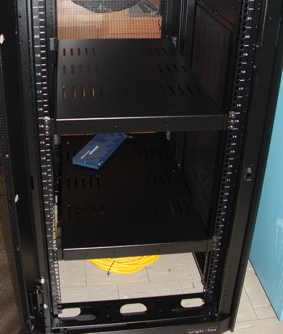
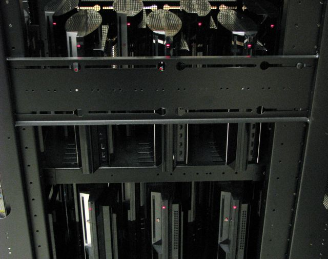

PlayStation 3 Gravity Grid

PS3 cluster rack

Rack front view

Rack side view
The PS3 Gravity Grid was a computing cluster built from Sony PlayStation 3 consoles.
Sony generously provided a partial donation of PS3 units to support this research.
Each PS3 contains a Cell Broadband Engine processor with 6 usable SPEs, providing
significant floating-point performance at very low cost per GFLOP.
The cluster was used to run time-domain Teukolsky equation solvers for computing gravitational waveforms from extreme-mass-ratio inspirals (EMRIs). The PS3 Cell processor proved exceptionally well-suited to this task owing to its SIMD architecture and high memory bandwidth.
Specifications
- ~16 PlayStation 3 consoles (60 GB model)
- Each: Cell BE @ 3.2 GHz, 6 active SPEs, 256 MB XDR RAM
- Network: Gigabit Ethernet switch
- OS: Yellow Dog Linux
- Peak: ~1.5 TFLOPS (single precision)
Videos
Also see the AFRL Condor PS3 cluster — a larger deployment funded by the US Air Force Research Laboratory.